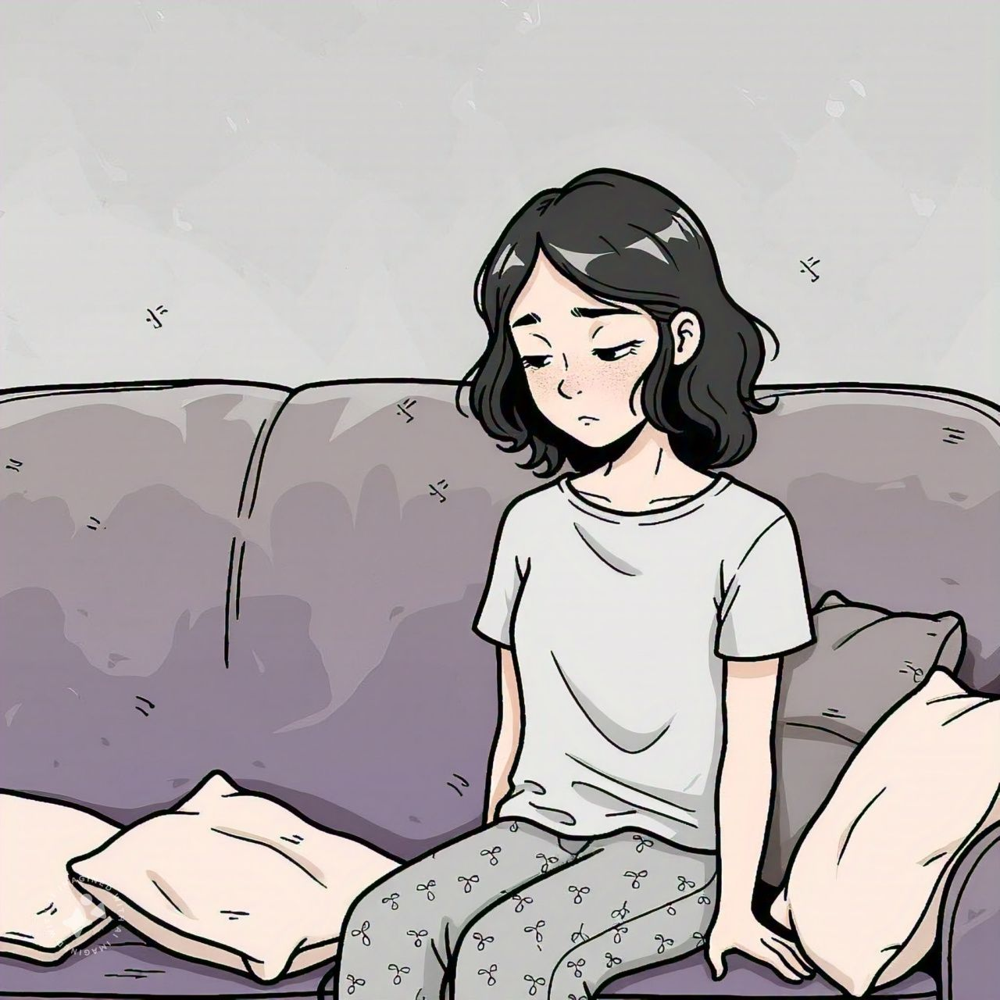

¿Que es la depresion?

La depresión es un trastorno del estado de ánimo caracterizado por una tristeza persistente, pérdida de
interés o placer en actividades, y una variedad de síntomas emocionales, cognitivos y físicos. Va más allá
de sentirse "triste" o "bajo" de ánimo; es una condición médica que puede afectar significativamente la
calidad de vida de quien la padece.
Supone una de las patologías más frecuentes en Atención Primaria y es la
primera causa de atención psiquiátrica y de discapacidad derivada de problemas mentales. Aparece con más
frecuencia en mujeres y en personas menores de 45 años.
El tratamiento con psicofármacos y/o psicoterapia, consiguen, en la mayoría de los casos, aliviar
parcialmente o en su totalidad los síntomas. Una vez se han
superado los síntomas de la depresión, convendrá seguir bajo tratamiento antidepresivo el tiempo necesario
para evitar posibles recaídas. En algunos casos, el tratamiento deberá prolongarse de por vida.

Síntomas principales:
Los síntomas de la depresión pueden variar en intensidad y duración, pero los más comunes incluyen:
- Emocionales:
- Sentimientos persistentes de tristeza, vacío o desesperanza.
- Irritabilidad o frustración, incluso por cosas pequeñas.
- Sentimientos de culpa o inutilidad.
- Cognitivos:
- Dificultad para concentrarse, tomar decisiones o recordar cosas.
- Pensamientos recurrentes de muerte o suicidio.
- Físicos:
- Fatiga constante o falta de energía.
- Cambios en el apetito (comer demasiado o muy poco).
- Alteraciones del sueño (insomnio o dormir en exceso).
- Dolores físicos sin causa aparente, como dolores de cabeza o musculares.

Causas:
La depresión es multifactorial y puede tener diversas causas o desencadenantes, entre ellos:
- Biológicos: Desequilibrios químicos en el cerebro (como serotonina y dopamina).
- Genéticos: Predisposición hereditaria.
- Psicológicos: Traumas, baja autoestima o formas negativas de interpretar el mundo.
- Sociales: Problemas familiares, laborales o situaciones de aislamiento.
- Eventos de vida estresantes: Pérdida de un ser querido, divorcio, enfermedad crónica.

Tipos de depresión:
- Depresión mayor: Episodios graves que afectan la funcionalidad diaria.
- Trastorno depresivo persistente (distimia): Síntomas más leves pero crónicos (duración de 2 años o más).
- Trastorno afectivo estacional: Depresión relacionada con los cambios estacionales, comúnmente en invierno.
- Depresión postparto: Afecta a algunas mujeres después de dar a luz.
- Depresión psicótica: Incluye síntomas psicóticos como delirios o alucinaciones.

Tratamiento:
El tratamiento de la depresión depende de la severidad y la situación individual, pero generalmente incluye:
- Terapia psicológica: La terapia cognitivo-conductual (TCC) es altamente efectiva.
- Medicamentos: Antidepresivos como ISRS (inhibidores selectivos de la recaptación de serotonina).
- Cambios en el estilo de vida: Ejercicio regular, alimentación equilibrada y buen descanso.
- Apoyo social: Grupos de apoyo o redes sociales positivas.

Importancia de buscar ayuda:
La depresión es tratable, pero muchas personas no buscan ayuda debido al estigma o a la falta de conocimiento. Hablar con un profesional de la salud mental es el primer paso para la recuperación. Además, el apoyo de familiares y amigos puede marcar una gran diferencia. Si tienes más preguntas o necesitas información específica, no dudes en preguntar. 💙